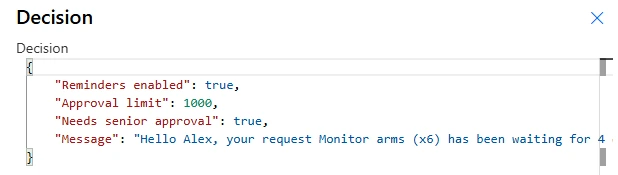

- Power Automate
- Level 8 · Real-world patterns · 6 of 8
Configurable templates and feature flags
Limits change, wording changes, features get switched on and off. If those values live inside the flow, every change is an edit and a redeploy. Put them in one settings object instead.
Settings from a JSON environment variable
WhatA JSON object of settings read once at the start; the flow uses
outputs('Settings')?['name'] everywhere.WhyThe business changes a limit or message without anyone touching the flow.
DemoReminders on/off, a reminder delay, an approval limit and a message template.
The settings
| Setting | Value | Used for |
|---|---|---|
| remindersEnabled | true | Feature flag |
| reminderAfterDays | 3 | Delay |
| approvalLimit | 1000 | Threshold |
| messageTemplate | Hello ~Name~, your request ~Title~ has been waiting for ~Days~ days. | Wording |

Using them
Settings Compose = the environment variable
remindersEnabled?true
Amount >
approvalLimit?Senior approval; fill the template
false
Skip reminders

outputs('Settings')?['remindersEnabled']| Piece | What it does |
|---|---|
outputs('Settings') | The settings object. |
?['remindersEnabled'] | One value by name. |
Where to keep settings
| Place | Good for | Changed by |
|---|---|---|
| JSON environment variable | A handful of values that differ per environment | An admin, per environment |
| SharePoint Settings list | Values the business owns: wording, limits | Business users |
| Child flow “Get settings” | Many flows sharing settings | One place, read by all flows |
New to this? Start from the basics optional
Feature flag: a true/false setting that turns part of the flow on or off.
Template: text with placeholders like ~Name~.
Common mistakes
- Values copied into many places in the flow.
- No default when a setting is missing (
coalesce). - Business-owned wording only an admin can change.